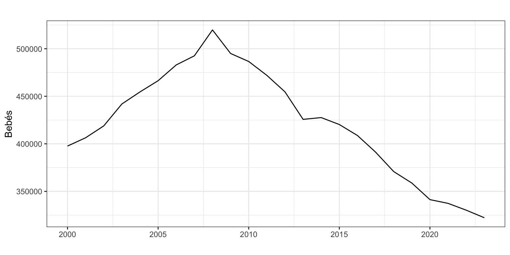
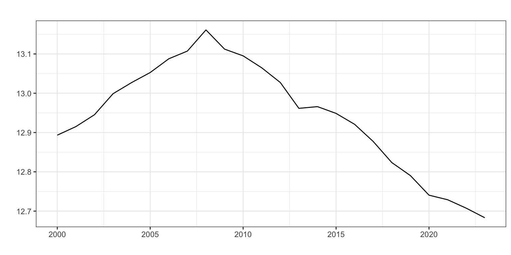
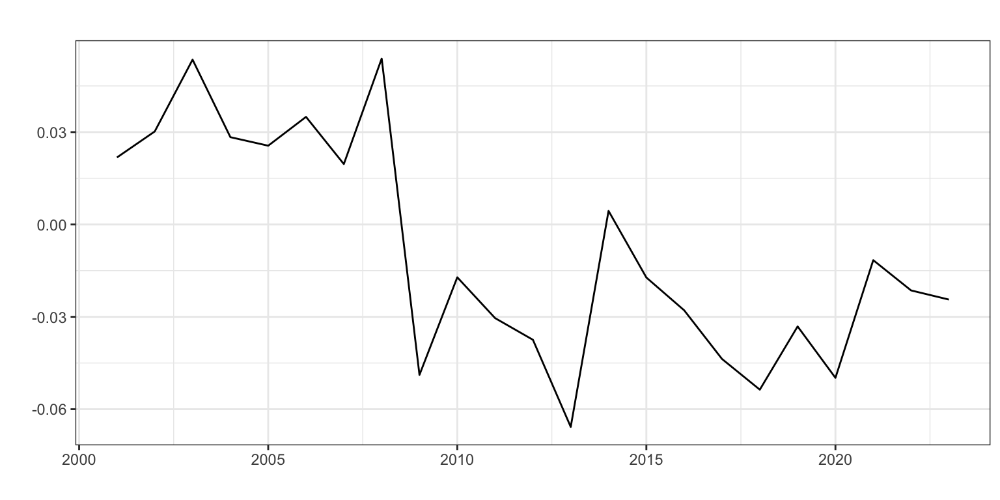
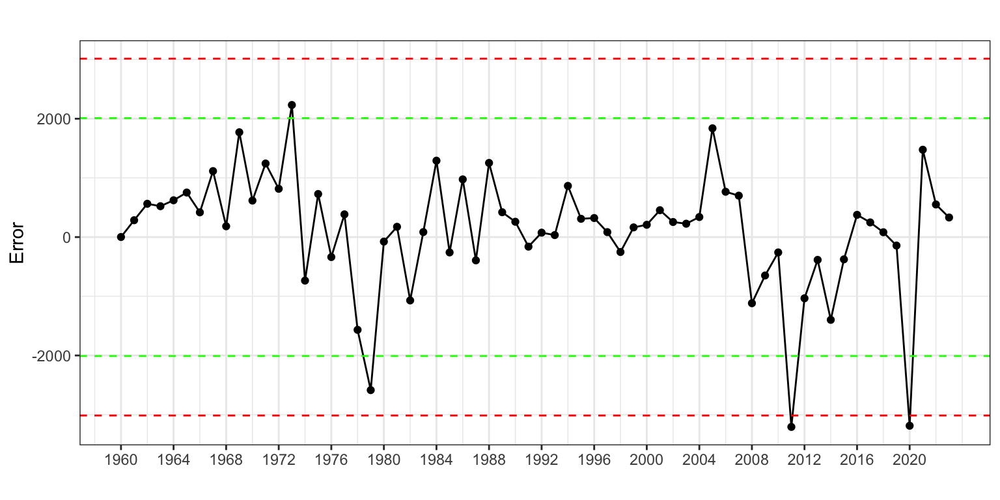
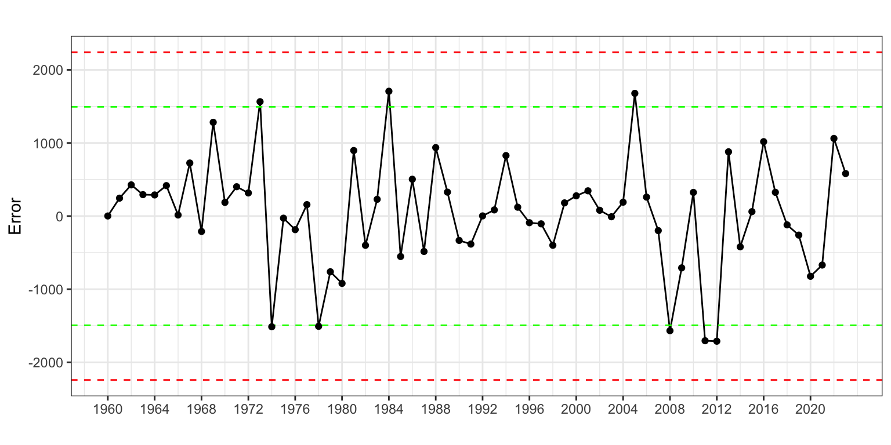

Procesos ARIMA
Previsión con Datos Temporales (GBIA)
1 Introducción
Los modelos ARIMA han mostrado ser uno se los métodos de ajuste de series temporales más valiosos desde que fueran formalizados en 1976 por Box y Jenkins (Box and Jenkins 1976). Además, dieron las pautas a seguir en el ajuste de una serie temporal para alcanzar buenas predicciones (véase epígrafe 6).
En este tema y el siguiente, definiremos estos procesos y aprenderemos a identificarlos, estimarlos y hacer predicciones.
Los modelos ARIMA son ahora el tronco de una amplia familia de procesos que requieren menos hipótesis para su aplicación o ajustan mejor bajo diferentes hipótesis: ARCH, GARCH, NGARCH, IGARCH, EGARCH, GARCH-M, QGARCH, GJR-GARCH, TGARCH, fGARCH…
Los modelos ARIMA y los métodos de Alisado Exponencial son complementarios:
- Los modelos de Alisado lineales son casos especiales de modelos Arima,
- Los modelos de Alisado no lineales no tienen su contrapartida en modelos Arima
- Muchos modelos Arima no tiene contrapartida en los modelos de Alisado.
Pero antes de entrar en materia es necesario definir una serie de conceptos que permitirán entender mejor una serie temporal como una muestra de un proceso generador de datos (PGD).
2 Proceso estocástico
2.1 Definición e hipótesis sobre el proceso
Un proceso estocástico \(Y_t\) es (sin excesiva precisión) una variable aleatoria que corresponde a momentos sucesivos del tiempo. A diferencia de los temas previos, en este vamos a estimar modelos sobre procesos estocásticos. Sería el equivalente para series temporales al modelo de regresión lineal que viste en el primer semestre para datos transversales.
Al igual que en Predicción con datos transversales, la aplicación de estos modelos requiere del cumplimiento de una serie de hipótesis. Para el caso de series temporales el proceso debe ser estacionario, ergódico y normal. Veamos estas hipótesis con algo más de detalle.
2.2 Proceso estacionario
Un proceso es estacionario en sentido estricto cuando la distribución conjunta no varía al realizar un desplazamiento en el tiempo de todas las variables.
- Si \(F(Y_{t_1},..., Y_{t_k})\) es la función de distribución conjunta y \(h>0\), entonces el proceso es estacionario en sentido estricto si \[F(Y_{t_1},..., Y_{t_k}) = F(Y_{t_1+h},..., Y_{t_k+h})\]
Intuitivamente, viendo aisladamente algunos los datos de la serie es imposible saber a que periodo temporal corresponden.
Comprobar si un proceso es estacionario en sentido estricto es muy difícil, así que vamos a encontrar condiciones suficientes: estacionariedad en media y en sentido amplio (covarianza). Bajo normalidad un proceso estacionario en sentido amplio también lo será en sentido estricto.
Proceso estacionario en media
Un proceso es estacionario en media (o de primer orden) si su nivel se mantiene en el tiempo: \[E[Y_t] = \mu \; \; \forall t\]
Proceso estacionario en sentido amplio
Un proceso (ya estacionario en media) es estacionario en sentido amplio, o de segundo orden, si sus momentos de orden dos (varianzas y covarianzas) no dependen del tiempo:
- La (auto)covarianza entre dos periodos de tiempo es finita y sólo depende del intervalo de tiempo transcurrido entre estos dos periodos: \[Cov[Y_t, Y_{t+k}] = E[(Y_t - \mu)(Y_{t+k} - \mu)] = \gamma_k,\,\,\,\forall t\]
Observa que la varianza será entonces \(Var[Y_t] = E[(Y_t - \mu)^2] = \gamma_0\).
Si en el contexto de series temporales la autocovarianza la interpretamos como la información de la serie que se transmite entre dos periodos de tiempo \(t\) y \(t'\), el supuesto de estacionariedad en sentido amplio nos dice que la información transmitida solo depende de la distancia temporal entre los dos periodos \(t - t'\) y no los periodos en si mismos. Por ejemplo, los nacimientos en enero de un año me dan información sobre los nacimientos en enero del año siguiente, y esta información es la misma e independiente del año en consideración. Además, la información transmitida entre dos eneros consecutivos es la misma que entre dos febreros o dos marzos consecutivos porque la distancia es la misma, 12 meses.
La Figura 1 muestra la serie Nacimientos que no es estacionaria ni en media, ni en varianza. No lo es en media por que presenta tendencia y, por tanto, el valor medio de la serie cambia en el tiempo; y no lo es estacionaria en varianza por que al inicio de la serie los datos presenta más variabilidad que a finales del siglo pasado.
2.3 Proceso ergódico
Para que un proceso sea ergódico las observaciones nuevas tienen que aportar suficiente información para que la varianza del valor medio converja a 0.
Una condición necesaria, pero no suficiente, para que un proceso estacionario sea ergódico es:
\[\lim_{k\rightarrow \infty} \gamma_k = 0.\]
Es decir, que cuanto más distancia hay entre dos periodos, menos información se transmite. Alternativamente, que el pasado cada vez ayuda menos a entender el presente.
2.4 Normalidad
Asumiremos que el error del modelo se distribuye como una variable aleatoria normal. Esta hipótesis se puede relajar si la serie tiene suficientes datos.
3 Transformaciones de una serie
3.1 Ideas generales
Una serie temporal \(\{y_t\}_{t=1}^T\) no tiene porque verificar las condiciones de estacionariedad y ergodicidad. A continuación veremos una serie de transformaciones que convierten una serie no estacionaria en estacionaria, y no ergódica en ergódica.
En el panel superior de la Figura 2 vuelves a tener la serie de nacimientos, que denominaremos \(y_t\); en el segundo panel la diferencia de la serie, \(y_t - y_{t-1}\); y en el panel inferior tienes la diferencia de la transformación logarítmica de la serie, \(log(y_t) - log(y_{t-1})\). La serie nacimientos no es estacionaria en media ni en varianza, su diferencia es estacionaria en media, pero no en varianza. Sin embargo, la transformación logarítmica y la diferencia han logrado que sea estacionaria en ambos sentidos.

En este tema veremos con detalle estas dos transformaciones –diferenciación y logaritmo– para series sin estacionalidad y dejaremos para el tema siguiente el caso de las series con estacionalidad.
3.2 Diferenciación
La diferenciación permite transformar una serie no estacionaria en media en estacionaria en media.
Diferenciar de orden \(k\) consiste en restar a la observación de un periodo la de \(k\) periodos antes: \[\nabla_k y_t = y_t - y_{t-k}.\]
Diferenciación regular (\(k=1\))
Un caso concreto es la diferenciación regular o diferenciación de orden uno, que consiste en restar a la observación de un periodo la del periodo precedente: \[\nabla y_t = y_t - y_{t-1}.\]
Si \(\nabla y_t\) no fuera estacionaria, se diferenciaría una segunda vez para obtener una doble diferenciación de primer orden: \[\nabla^{2} y_t = \nabla(\nabla y_t) = \nabla y_t - \nabla y_{t-1} = (y_t - y_{t-1}) - (y_{t-1} - y_{t-2}) = y_t - 2y_{t-1} + y_{t-2}\]
En la práctica una sola diferenciación suele ser suficiente para obtener la estacionariedad en media; diferenciar dos veces es excepcional; y diferenciar tres o más veces no se da.
Existe la diferencia estacional, que consiste en restar a la observación de un periodo la observación precedente de la misma estación y que veremos en detalle en el tema 7.
Además, en series sin estacionalidad la diferenciación también permite alcanzar la ergodicidad.
La Figura 3 muestra un ejemplo de diferenciación regular. En el panel superior aparece la serie anual de Nacimientos \(y_t\); en el segundo panel se muestra la serie diferenciada regularmente una vez \(\nabla y_t\); y en el panel inferior la serie doblemente diferenciada \(\nabla^2 y_t\).

¿Qué transformación para nacimientos consideras que genera una serie estacionaria? Siempre hay un cierto grado de subjetividad en la elección de las diferencias que hay que aplicar a una serie. En la Figura 3 podemos considerar que la diferenciación regular (panel medio) es suficiente para lograr la estacionariedad (en media y en varianza) y terminar el proceso de diferenciación. Pero también podemos considerar que la serie no es del todo estacionaria en media, y optar por la doble diferenciación regular (panel inferior).
Diferenciación con R
R dispone de la función diff para diferenciar una serie:
diff(x, lag = k)calcula la diferencia de orden \(k\), \(\nabla_k y_t\)diff(x)calcula la diferencia regular o de orden \(1\), \(\nabla y_t\) (el valor por defecto delages 1)diff(x, difference = d)calcula \(d\) diferencias regulares, \(\nabla^d y_t\)
Además, en forecast está disponible la función ndiffs que estima el número de diferencias regulares necesarias para que una serie sea estacionaria. Para ello usa un contraste de raíces unitarias (que no veremos en este curso). Para la serie nacimientos anual la función sugiere una doble diferenciación.
ndiffs(nacimientosAnual)[1] 2Operador Retardo
Definimos el operador retardo \(L\) como \(Ly_t = y_{t-1}\), es decir, retrasa un periodo la serie. En inglés se denomina lag operator (L) o backward shift (B)
Así, se tiene que \[L^k y_t = y_{t-k}\] y por tanto que
\[ \begin{aligned} \nabla y_t & = y_t - y_{t-1} = y_t - Ly_t = (1-L)y_t \\ \nabla^d y_t & = (1-L)^d y_t \end{aligned} \]
La Tabla 1 muestra un sencillo ejemplo del efecto del operador retardo sobre la serie \(y_t\)
| y | lag1_y | lag2_y | lag3_y |
|---|---|---|---|
| 1 | NA | NA | NA |
| 2 | 1 | NA | NA |
| 3 | 2 | 1 | NA |
| 4 | 3 | 2 | 1 |
| 5 | 4 | 3 | 2 |
| 6 | 5 | 4 | 3 |
| 7 | 6 | 5 | 4 |
3.3 Transformación logarítmica
Si la serie original no es estacionaria en sentido amplio –por ejemplo porque la amplitud estacional crece con el nivel de la serie–, es posible obtener la estacionariedad por medio de transformaciones simples. La transformación logarítmica de una serie es una alternativa1.
La Figura 4 muestra la serie Nacimientos y su logaritmo. La variabilidad estacional con la transformación logarítmica (panel inferior) es más constante que en la serie original (panel superior).

Sin embargo, para series sin estacionalidad, el uso de la transformación logarítmica para alcanzar la estacionariedad en varianza es muy excepcional.
3.4 Diferencia, Logaritmo y Tasa de variación
La transformación \(\nabla y_t\) se puede interpretar como variaciones en nivel. Sin embargo, cuando una serie tiene que ser diferenciada para conseguir su estacionariedad, vale la pena probar una transformación alternativa que también es interpretable: \(\nabla \log(y_t)\).
Dado que, \[\nabla \log(y_t) = \log(y_t) - \log(y_{t-1}) = \log\big(\frac{y_t}{y_{t-1}} \big) \approx \frac{y_t}{y_{t-1}} - 1 = \frac{y_t - y_{t-1}}{y_{t-1}} =TV y_t.\]
Para una serie la diferencia regular del logaritmo (natural) es la Tasa de Variación de la serie, que tiene una clara interpretación como variación porcentual. Si la serie es anual, tendremos la tasa de variación anual; si es semanal, la tasa de variación semanal.
La diferenciacion y el logaritmo en series sin estacionalidad
Si se tiene una serie sin estacionalidad y no estacionaria, bastará diferenciarla una o, a lo sumo, dos veces para que sea estacionaria en media, en sentido amplio y ergódica.
La transformación logarítmica se puede usar si se desea ganar en interpretabilidad o para intentar mejorar las predicciones.
La transformación logarítmica no es necesaria para alcanzar la estacionariedad de la serie.
4 Función de autocorrelación
Si la serie es estacionaria y ergódica, el valor medio de la serie es constante y, por tanto, no informativo. Son las covarianzas los que caracterizan el proceso estocástico.
Recordemos que \(\gamma_k=Cov(y_t,y_{t-k})\) es la autocovarianza de orden \(k\). Por tanto \(\gamma_0\) es la varianza de la serie \(y_t\). Sea \(\rho_k\) la autocorrelación se orden \(k\). Se puede verificar que \[\rho_k = cor(y_t, y_{t-k}) =\frac{\gamma_k}{\gamma_0}.\]
- \(\rho_1\) mide la información que se transmite de un periodo al siguiente periodo.
- \(\rho_k\) mide la información que se transmite k periodos hacia adelante.
Las autocorrelaciones caracterizan el proceso estocástico, y la función de autocorrelación o correlograma (FAC, o ACF en inglés) es el gráfico de \(r_k\) contra \(k\), donde \(r_k\) es la estimación de \(\rho_k\) obtenida con las observaciones.
La Figura 5 muestra la FAC para la serie Nacimientos anuales y algunas de sus transformaciones. Observa el uso del argumento lag, que en la función ggAcf indica el orden máximo de la autocorrelación mostrada en el gráfico. La primera columna muestra la FAC para Nacimientos y varias diferenciaciones, mientras que la segunda columna muestra la FAC para el logaritmo de los nacimientos y sus diferenciaciones. Se puede observar que:
- La FAC de una serie y de su transformación logarítmica son muy similares.
- En los paneles de la primera y segunda fila las autocorrelaciones decrecen lentamente. Este es un claro indicativo de que la serie analizada no es estacionaria ni ergódica.
- Solo la doble diferenciación regular de la serie (original o su logaritmo) muestran un rápido descenso en los coeficientes de autocorrelación (paneles de la última fila), indicando que la serie así transformada es estacionaria y ergódica.
# nacimientosAnual es la seria anual de Nacimientos
ggAcf(nacimientosAnual, lag = 10)
ggAcf(log(nacimientosAnual), lag = 10)
ggAcf(diff(nacimientosAnual), lag = 10)
ggAcf(diff(log(nacimientosAnual)), lag = 10)
ggAcf(diff(nacimientosAnual, differences = 2), lag = 10)
ggAcf(diff(log(nacimientosAnual), differences = 2), lag = 10)



Las bandas azules de la FAC muestran el intervalo de confianza al 95% (IC95). Si \(\rho_k = 0\), la distribución del estimador \(r_k\) se distribuye aproximadamente como una normal de media \(-1/T\) y varianza \(1/T\). Las líneas punteadas de la FAC están dibujadas en las posiciones \(\frac{-1}{T} \pm \frac{1.96}{\sqrt{T}}\).
Si un \(r_k\) cae fuera del IC95, hay evidencia para rechazar la hipótesis nula de que \(\rho_k = 0\) a un nivel del 5%. Recordemos que incluso si todos los \(\rho_k\) son cero, cabe esperar que un 5% de sus estimaciones \(r_k\) caigan fuera del IC95.
Los \(\rho_k\) no son independientes. Si uno cae fuera del IC95, es más probable que los valores vecinos caigan también fuera.
Si queremos ver los valores numéricos de las autocorrelaciones debemos añadir a la función ggAfc el argumento plot = FALSE. Para la serie doblemente diferenciada vemos que la relación más elevada se da para el primer retardo (\(r_{1}=-0.468\)), el dato que más se parece a los nacimientos de un año son los nacimientos del año previo.
ggAcf(diff(nacimientosAnual, differences = 2),
lag=10,
plot = FALSE)
Autocorrelations of series 'diff(nacimientosAnual, differences = 2)', by lag
0 1 2 3 4 5 6 7 8 9 10
1.000 -0.474 0.230 -0.140 0.217 -0.254 0.058 -0.038 0.116 0.000 -0.271
5 Procesos ARIMA
ARIMA surge de combinar las siglas de tres procesos diferentes: AR de AutoRegresive, I de Integrated y MA de Moving Average. Veamos cada uno de estos tres conceptos por separado y luego su combinación.
A lo largo de lo que resta del tema asumiremos que:
\(\{y_t\}_{t=1}^T\) es una realización de un proceso estocástico desconocido.
El proceso estocástico es estacionario en sentido amplio:
\[E[y_t] = \mu < \infty \;\;\; \forall t,\]
\[Cov[y_t, y_{t-k}] = \gamma_k \;\;\; \forall k.\]
- El proceso estocástico es ergódico, o su condición suficiente: \[\lim_{k \rightarrow \infty} \gamma_k = 0.\]
5.1 Procesos autorregresivos AR(p)
Definición
El modelo general autorregresivo de orden p, \(y_t \sim AR(p)\) viene definido por \[y_t=c + \phi_1 y_{t-1} + \phi_2 y_{t-2} + \ldots + \phi_p y_{t-p} + \varepsilon_t,\] que usando el operador retardo queda \[(1 - \phi_1 L - \phi_2 L^2 - \ldots - \phi_p L^p)y_t = c + \varepsilon_t\]
En este y en cualquier proceso ARIMA, al polinomio en \(L\) que acompaña a \(y_t\) se le denomina polinomio autorregresivo.
Se suele asumir que el error del modelo \(\varepsilon_t\) verifica las hipótesis estándar de media cero, incorrelación, homocedasticidad e idéntica distribución: \(\varepsilon_t \sim iid(0, \sigma^2)\). En este curso no vamos a prestar atención a este conjunto de hipótesis porque no jugarán ningún papel en la elección del modelo óptimo –aquel con mejores predicciones.
Ejemplos
\(y_t \sim AR(1): \;\;y_t = c + \phi_1 y_{t-1} + \varepsilon_t\) o \((1 - \phi_1 L)y_t = c + \varepsilon_t\)
\(y_t \sim AR(2): \;\;y_t = c + \phi_1 y_{t-1} + \phi_2 y_{t-2} + \varepsilon_t\) o \((1 - \phi_1 L - \phi_2 L^2)y_t = c + \varepsilon_t\)
5.2 Procesos en medias móviles MA(q)
Definición
El modelo general en medias móviles de orden q, \(y_t \sim MA(q)\) viene definido por \[y_t=c + \varepsilon_t + \theta_1 \varepsilon_{t-1} + \theta_2 \varepsilon_{t-2} + \ldots + \theta_q \varepsilon_{t-q},\] que usando el operador retardo queda \[y_t = c + (1 + \theta_1 L + \theta_2 L^2 + \ldots + \theta_q L^q) \varepsilon_t\]
En este y en cualquier proceso ARIMA, al polinomio en \(L\) que acompaña a \(\varepsilon_t\) se le denomina polinomio en medias móviles.
Ejemplos
\(y_t \sim MA(1): \;\;y_t = c + \varepsilon_t + \theta_1 \varepsilon_{t-1}\) o \(y_t = c + (1 + \theta_1 L)\varepsilon_t\)
\(y_t \sim MA(2): \;\;y_t=c + \varepsilon_t + \theta_1 \varepsilon_{t-1} + \theta_2 \varepsilon_{t-2}\) o \(y_t = c + (1 + \theta_1 L + \theta_2 L^2)\varepsilon_t\)
5.3 Procesos ARMA(p,q)
Definición
El modelo general \(y_t \sim ARMA(p,q)\) viene dado por \[y_t = c + \phi_1 y_{t-1} + \phi_2 y_{t-2} + \ldots + \phi_p y_{t-p} + \theta_1 \varepsilon_{t-1} + \theta_2 \varepsilon_{t-2} + \ldots + \theta_q \varepsilon_{t-q}+ \varepsilon_t,\] que usando el operador retardo queda \[(1 - \phi_1 L - \ldots - \phi_p L^p)y_t = c + (1 + \theta_1 L + \ldots + \theta_q L^q) \varepsilon_t.\]
Ejemplos
\(y_t \sim ARMA(1, 1): \;\;y_t = c + \phi_1 y_{t-1} + \theta_1 \varepsilon_{t-1} + \varepsilon_{t}\) o \((1 - \phi_1 L)y_t = c + (1 + \theta_1 L)\varepsilon_t\)
\(y_t \sim ARMA(0, 0): \;\;y_t = c + \varepsilon_{t}\). Si \(c = 0\), a este proceso se le denomina ruido blanco.
5.4 Proceso ARIMA(p,d,q)
Si la serie \(y_t\) no es estacionaria, pero tras diferenciarla \(d\) veces se hace estacionaria, diremos que la serie es integrada de orden \(d\): \(y_t \sim I(d)\). Por tanto,
- una serie estacionaria se indicará como \(y_t \sim I(0)\)
- \(y_t \sim I(d)\) es equivalente a \(\nabla^d y_t = (1 - L)^d y_t \sim I(0)\)
Una serie \(y_t\) sigue un proceso \(ARIMA(p,d,q)\) si:
- hay que diferenciar la serie \(d\) veces para hacerla estacionaria, \(y_t \sim I(d)\); y
- la serie diferenciada sigue un proceso ARMA(p,q), \(\nabla^d y_t \sim ARMA(p,q)\).
Entonces, podemos escribir \(y_t \sim ARIMA(p,d,q)\):
\[\begin{equation*} \begin{array}{c@{\qquad}c@{\quad}ccc} (1 - \phi_1 L - \ldots - \phi_p L^p) & (1- L)^d y_t & = & c + (1 + \theta_1 L + ... + \theta_q L^q) \varepsilon_t \\ \uparrow & \uparrow & & \uparrow \\ AR(p) & I(d) & & MA(q) \end{array} \end{equation*}\]Ejemplos
\(y_t \sim ARIMA(1, 1, 1): \;\;(1 - \phi_1 L)(1- L) y_t = c + (1 + \theta_1 L) \varepsilon_t\) o \(y_t = c + y_{t-1} + \phi_1(y_{t-1} - y_{t-2}) + \theta_1 \varepsilon_{t-1} + \varepsilon_t\).
\(\log(y_t) \sim ARIMA(1, 1, 1): \;\;(1 - \phi_1 L)(1- L) \log(y_t) = (1 - \phi_1 L)TVy_t = c + (1 + \theta_1 L) \varepsilon_t\) o \(TVy_t = c + \phi_1 TVy_{t-1} + \theta_1 \varepsilon_{t-1} + \varepsilon_t\).
\(y_t \sim ARIMA(0, 1, 0): \;\;(1- L) y_t = c + \varepsilon_t\) o \(y_t = c + y_{t-1} + \varepsilon_t\). Si \(c=0\), tenemos un paseo aleatorio; si \(c \neq 0\), tenemos un paseo aleatorio con deriva.
6 Aproximación de Box-Jenkins
La Figura 6 muestra el flujo de procesos asociado a la modelización por modelos ARIMA, con cuatro grandes áreas:
Identificación, que requiere primero transformar la serie para que sea estacionaria y ergódica, para después identificar los valores de p y q.
Haremos uso de algunas funciones de auto identificación que nos ayudaran en este punto.
Estimación de los parámetros del modelo, incluidas las variables de intervención y obtención del error. El método usual de estimación de los parámetros es por máxima verosimilitud.
Validación de las hipótesis sobre el modelo. Analizaremos que no es necesaria más intervención y veremos la pertinencia de los parámetros del modelo (bien contrastando su significatividad o bien por alguna regla más sencilla).
Si la validación no se pasa, puede ser necesario volver al proceso inicial y realizar una nueva identificación del modelo.
Predicción e interpretación del modelo válido. Si las predicciones se alejan de los valores reales más de lo esperado o presentan sesgo, puede ser necesario identificar y estimar un nuevo modelo.

Identificación automática
El paquete forecast dispone de la función auto.arima() que localiza el mejor modelo basándose en el AIC corregido para pequeñas muestras (AICc). No hay que fiarse ciegamente de los resultados de esta función, pero ayuda en la identificación. Básicamente el algoritmo seguido es el siguiente:
- Determina el orden de diferenciación regular \(0 \leq d \leq 2\) usando la función
ndiffs. - Tras diferenciar la serie:
- se estiman una serie de modelos básicos predeterminados.
- se usa el criterio AICc para seleccionar el mejor de estos modelos.
- a partir del modelo seleccionado, se hacen pequeñas variaciones modificando en una unidad p y q y añadiendo/quitando la constante y se vuelve a seleccionar el mejor de los nuevos modelos.
- Se repite el paso 2 hasta que no se puede mejorar el AICc.
Cuando usemos esta función, debemos tener cuenta que:
- La función
auto.arimano permite constante si se diferencia dos veces. - Si se desea hacer una búsqueda exhaustiva entre todos los posibles modelos, se debe usar el argumento
stepwise = FALSE. - Si se desea que el cálculo de AICc sea exacto (por defecto para ganar tiempo calcula una aproximación), se debe usar el argumento
approximation = FALSE. - Si se desea ver para todos los modelos analizados el valor de AICc, se debe incluir el argumento
trace = TRUE.
La función auto.arima tiende a sobreparametrizar los modelos y es muy recomendable ayudarla indicando las diferenciaciones y la posible intervención.
7 Ejemplos
7.1 Títulos de libros y panfletos
Vamos a aplicar la metodología de Box-Jenkins a la serie Libros (número de títulos publicados anualmente en España desde 1993 hasta 2019).
libros <- read.csv2("./series/libros.csv", header = TRUE)
libros <- ts(libros[, 2], start = 1993, frequency = 1)
autoplot(libros,
xlab = "",
ylab = "Titulos",
main = "")
Transformación de la serie
El primer paso es transformar la serie original para que sea estacionaria. La Figura 8 muestra la gráfica temporal y la FAC para la serie original y su primera diferencia.
autoplot(libros, xlab = "", ylab = "", main = "")
autoplot(diff(libros), xlab = "", ylab = "", main = "")
ggAcf(libros, xlab = "", ylab = "", main = "")
ggAcf(diff(libros), xlab = "", ylab = "", main = "")


Además,
ndiffs(libros)[1] 1Podemos concluir que la primera diferencia de la serie Libros es estacionaria y ergódica. Es decir, \(d=1\) o \(libros_t \sim I(1)\).
Identificación
Tras diferenciar la serie, vamos a identificar los valores de \(p\) y \(q\). Este es el proceso más difícil y para simplificar las cosas vamos a ayudarnos de la función auto.arima. Como ya hemos decidido el número de diferenciaciones, fijamos este parámetro con d = 1.
auto.arima(libros,
d = 1,
trace = TRUE)
ARIMA(2,1,2) with drift : Inf
ARIMA(0,1,0) with drift : 529.2727
ARIMA(1,1,0) with drift : 531.8087
ARIMA(0,1,1) with drift : 531.8033
ARIMA(0,1,0) : 527.5277
ARIMA(1,1,1) with drift : Inf
Best model: ARIMA(0,1,0) Series: libros
ARIMA(0,1,0)
sigma^2 = 34911235: log likelihood = -262.68
AIC=527.36 AICc=527.53 BIC=528.62Observa como la identificación automática da como mejor modelo \(p=q=0\). Es decir \(libros_t \sim ARIMA(0,1,0)\) sin deriva (sin constante), por tanto, sigue un paseo aleatorio: \[libros_t = libros_{t-1} + \varepsilon_t\]
Estimación
Aunque existe la función arima de stats, vamos a usar la función Arima de la librería forecast para estimar el modelo identificado por ser más versátil. El argumento order indica los valores de (p, d , q) como un vector y el argumento lógico include.constant indica si se desea incluir la constante \(c\) en el modelo.2.
arima010 <- Arima(libros,
order=c(0, 1, 0),
include.constant = FALSE)
arima010Series: libros
ARIMA(0,1,0)
sigma^2 = 34911235: log likelihood = -262.68
AIC=527.36 AICc=527.53 BIC=528.62Nuestro modelo estimado es: \(\widehat{libros}_t = libros_{t-1}\). La mejor predicción para un año, es la observación del año anterior, ¡el método ingenuo I!
Intervención
Se analiza si para algún año se observa un error atípico (por ejemplo 3 veces superior al error estándar). La Figura 9 muestra que en este caso en varios periodos, años 2008, 2009 y 2013, el residuo sobrepasa los dos errores estándar pero queda lejos de los tres errores estándar así que asumiremos que no hay valores atípicos.
error <- residuals(arima010)
sderror <- sd(error)
autoplot(error, series="Error",
colour = "black",
xlab = "",
ylab = "Error",
main = "") +
geom_hline(yintercept = c(-3, -2, 2, 3)*sderror,
colour = c("red", "green", "green", "red"),
lty = 2) +
geom_point() +
scale_x_continuous(breaks= seq(1993, 2019, 2)) 
Medidas de error
El error medio es 5798 títulos (RMSE) y el error porcentual medio (MAPE) es 6.88%.
accuracy(arima010) ME RMSE MAE MPE MAPE MASE ACF1
Training set 868.03 5798.12 4358.32 1.29 6.88 0.96 -0.04Además, hay cierto sesgo (las previsiones intramuestrales en media subestiman los datos reales) y la fórmula usada para la previsión por intervalo es correcta.
Predicción
Una vez validado el modelo podemos pasar a realizar predicciones, en este caso a 5 años vista.
parima010 <- forecast(arima010,
h = 5,
level = 95)
parima010 Point Forecast Lo 95 Hi 95
2020 64154 52573.41 75734.59
2021 64154 47776.57 80531.43
2022 64154 44095.83 84212.17
2023 64154 40992.82 87315.18
2024 64154 38259.01 90048.99autoplot(parima010,
xlab = "",
ylab = "Títulos",
main = "") +
scale_x_continuous(breaks= seq(1993, 2024, 2)) 
La Figura 10 muestra la serie, la previsión y el intervalo de confianza al 95%. La predicción es constante e igual al último dato. En las series diferenciadas el intervalo de confianza de las predicciones crece muy rápidamente porque los errores se van acumulando sin ningún tipo de amortiguamiento.
7.2 Aforo de vehículos
Vamos a aplicar de nuevo la metodología de Box-Jenkins a la serie aforo de vehículos por Oropesa, carretera N-340, km. 996,48 (fuente Ministerio de Fomento). La serie es anual de 1960 a 2021 (62 datos).
aforo <- read.csv2("./series/aforo_oropesa.csv",
header = TRUE)
aforo <- ts(aforo,
start = 1960,
freq = 1)
autoplot(aforo,
xlab = "",
ylab = "Vehículos (000)",
main = "")
Los puntos de inflexión de la tendencia de la serie aforo en la carretera N-340 están muy relacionados con la autopista AP-7 y las crisis ocurridas en España: la caída del aforo en 1979 se debe a la inauguración en 1978 del tramo de la AP-7 Torreblanca - Castellón; la caída en 2009 a la crisis financiera que llevó a la Gran Recesión; y la caída en 2020 a la crisis económica originada por la pandemia de la Covid-19.
En este ejemplo incluiremos, por primera vez, intervención y veremos como la presencia de valores atípicos puede distorsionar el proceso de identificación automática. Por ello, es conveniente realizar en paralelo ambas actividades, identificar el proceso y detectar valores atípicos.
Transformación de la serie
La Figura 12 muestra que la serie Aforo no es estacionaria. Así, el primer paso es transformar la serie original para que lo sea. La serie no es estacionaria, pero sí lo es su primera diferencia. Ten siempre presente que diferenciar más veces de las necesarias puede dificultar la identificación y la interpretación. Por otro lado, aunque la función ndiffs aconseja dos diferenciaciones, nada apunta a que esta sea una buena decisión. Así, optamos por fijar \(d = 1\).
autoplot(aforo, xlab = "", ylab = "", main = "")
autoplot(diff(aforo), xlab = "", ylab = "", main = "")
ggAcf(aforo, xlab = "", ylab = "", main = "")
ggAcf(diff(aforo), xlab = "", ylab = "", main = "")


ndiffs(aforo)[1] 2
Identificación y Estimación
Veamos a identificar los valores de \(p\) y \(q\) a partir de auto.arima, indicándole que d = 1. La función sugiere un proceso ARIMA(0,1,0) sin constante.
auto.arima(aforo,
d = 1)Series: aforo
ARIMA(0,1,0)
sigma^2 = 1049309: log likelihood = -509.4
AIC=1020.79 AICc=1020.86 BIC=1022.9Vamos a ver la gráfica de los residuos del modelo ARIMA(0,1,0) para identificar los valores extremos (intervención).
arima010 <- Arima(aforo,
order = c(0, 1, 0),
include.constant = FALSE)
error <- residuals(arima010)
sderror <- sd(error)
autoplot(error, series="Error",
colour = "black",
xlab = "",
ylab = "Error",
main = "") +
geom_hline(yintercept = c(-3, -2, 2, 3)*sderror,
colour = c("red", "green", "green", "red"),
lty = 2) +
geom_point() +
scale_x_continuous(breaks= seq(1960, 2020, 4))
#time(error)[abs(error) > 2.5*sderror]
Se identifican tres posibles valores extremos, tres intervenciones, en los años 1979, 2011 y 2020 (el error supera las 2.5 desviaciones típicas). Cada una de las intervenciones es del tipo pulso porque solo afecta un periodo de la serie.
Ahora, creamos una variable ficticia asociada a cada intervención, que denominaremos d1979, d2011 y d2020. La forma de definir la variable ficticia asociada a un pulso consiste en crear una variable de ceros, excepto para el periodo atípico en que la variable valdrá 1.
d1979 <- 1*(time(error) == 1979)
d2011 <- 1*(time(error) == 2011)
d2020 <- 1*(time(error) == 2020)Por último, incluimos las tres variables ficticias en la autoidentificación.
auto.arima(aforo,
d = 1,
xreg = cbind(d1979, d2011, d2020))Series: aforo
Regression with ARIMA(2,1,0) errors
Coefficients:
ar1 ar2 d1979 d2011 d2020
0.2013 0.4358 -1698.4381 -1192.7258 -2377.6014
s.e. 0.1176 0.1211 488.9004 454.3885 476.1138
sigma^2 = 602905: log likelihood = -490.17
AIC=992.33 AICc=993.89 BIC=1005Observa como la inclusión de intervención modifica la autoidentificación, que ahora es un proceso ARIMA(2,1,0).
arima210 <- Arima(aforo,
order = c(2, 1, 0),
include.constant = FALSE,
xreg = cbind(d1979, d2011, d2020))
arima210Series: aforo
Regression with ARIMA(2,1,0) errors
Coefficients:
ar1 ar2 d1979 d2011 d2020
0.2013 0.4358 -1698.4381 -1192.7258 -2377.6014
s.e. 0.1176 0.1211 488.9004 454.3885 476.1138
sigma^2 = 602905: log likelihood = -490.17
AIC=992.33 AICc=993.89 BIC=1005Una forma rápida, aunque imprecisa, de determinar si un coeficiente es relevante (significativo) es compararlo con su error estándar (standard error, s.e). Si el coeficiente es mayor que dos veces su error estándar, hay evidencia de que es significativo. En la salida de R, en la tabla Coefficients tienes en la primera fila el nombre de los coeficientes (ar en lugar de \(\phi\) y ma en lugar de \(\theta\)); su valor estimado aparece en la segunda fila de la tabla; y los errores estándar en la tercera fila (precedida por s.e.). Todos los coeficientes estimados, excepto el ar1 (\(\phi_1\)), superan las dos desviaciones estándar y parece que son significativos.
La Figura 14 muestra que para ningún año se observa un error atípico. Es decir, no es necesaria más intervención.
error <- residuals(arima210)
sderror <- sd(error)
autoplot(error, series="Error",
colour = "black",
xlab = "",
ylab = "Error",
main = "") +
geom_hline(yintercept = c(-3, -2, 2, 3)*sderror,
colour = c("red", "green", "green", "red"),
lty = 2) +
geom_point() +
scale_x_continuous(breaks= seq(1960, 2020, 4)) 
Validación
La identificación de errores atípicos –para la posterior inclusión de sus variables de intervención asociadas– ha sido un tanto arbitraria: ¿es atípico el error que supera las 2 desviaciones típicas, las dos y media, las tres desviaciones típicas?
A fin de poner un poco de objetividad en la decisión, podemos ver si sus coeficientes son significativos (distintos de cero) y dejar solo aquellas variables de intervención cuyos coeficientes lo sean. Si la serie es suficientemente larga, también podríamos saltarnos este paso y dejar las variables de intervención que mejoren las predicciones extramuestrales del modelo o las que recojan efectos conocidos.
Existen varias alternativas (prueba z, prueba t, prueba de Wald…), así que vamos a optar por la más sencilla y cómoda, la prueba z. Esta prueba asume normalidad asintótica en la distribución de los coeficientes o, al menos, una muestra suficientemente grande. Para implementar la prueba z usaremos la función coeftest (se precisa la librería lmtest) que permitirá contrastar individualmente si cada coeficiente es significativo. Esta función requiere por defecto un solo argumento, el que contiene la estimación del modelo Arima.
Veamos qué coeficientes estimados son significativos.
coeftest(arima210)
z test of coefficients:
Estimate Std. Error z value Pr(>|z|)
ar1 0.20130 0.11756 1.7123 0.0868452 .
ar2 0.43575 0.12110 3.5981 0.0003205 ***
d1979 -1698.43813 488.90036 -3.4740 0.0005128 ***
d2011 -1192.72579 454.38852 -2.6249 0.0086674 **
d2020 -2377.60140 476.11381 -4.9938 5.921e-07 ***
---
Signif. codes: 0 '***' 0.001 '**' 0.01 '*' 0.05 '.' 0.1 ' ' 1Las tres variables de intervención son significativas y el coeficiente \(\phi_2\) (ar2) también. No es significativo el coeficiente \(\phi_1\) (ar1), pero no lo podemos eliminar. Los modelos Arima son modelos jerárquicos donde la presencia de un coeficiente significativo de cierto orden exige que los coeficientes de orden inferior estén presentes, sean o no significativos. En nuestro caso, como el coeficiente \(\phi_2\) es significativo, se debe dejar en el modelo el coeficiente \(\phi_1\).
Confirmamos que \(aforo_t \sim ARIMA(2,1,0)\) con intervención.
Medidas de error
El error medio es 738 miles de vehículos (RMSE) y el error porcentual medio (MAPE) es 5.83%. No hay sesgo de predicción y la fórmula empleada para el cálculo del intervalo de confianza de las predicciones es válida.
accuracy(arima210) ME RMSE MAE MPE MAPE MASE ACF1
Training set 20 737.94 542.1 0.91 5.83 0.74 0.05
Interpretación del modelo
El modelo teórico es \(aforo_t \sim ARIMA(2,1,0) + d1979 + d2011 + d2020\):
\[(1 - \phi_1 L - \phi_2 L^2)(1 - L)aforo_t = \varepsilon_t + \gamma_1 \cdot d1979 + \gamma_2 \cdot d2011 + \gamma_3 \cdot d2020.\]
Si desarrollamos, queda:
\[aforo_t = aforo_{t-1} + \phi_1(aforo_{t-1}-aforo_{t-2}) + \phi_2(aforo_{t-2}-aforo_{t-3}) +\] \[\gamma_1 \cdot d1979 + \gamma_2 \cdot d2011 + \gamma_3 \cdot d2020 + \varepsilon_t.\]
Finalmente, el modelo estimado es: \[\widehat{aforo}_t = aforo_{t-1} + 0.20(aforo_{t-1}-aforo_{t-2}) + 0.44(aforo_{t-2}-aforo_{t-3})\] \[-1698 \cdot d1979 - 1193 \cdot d2011 - 2378 \cdot d2020\] Cada año el aforo es el mismo que el aforo del año pasado más un 20% del último incremento observado y un 44% del incremento anterior.
Respecto de la intervención, en 1979 hubo un 1.7 millones menos de vehículos de lo esperado, debido a la apertura de la autopista AP-7; en 2011 hubo 1.2 millones menos de vehículos, debido a la Gran Recesión; y en 2020 las restricciones de movilidad debidas a la pandemia redujeron el aforo en 2.4 millones de vehículos.
Predicción
Como hemos incluido tres variables ficticias en el ajuste, de cara a predecir el aforo hemos de indicar cuales serán los valores futuros para estas variables. En este caso serán cero puesto que son intervenciones que no responden a un efecto calendario. Las causas detrás de estas intervenciones no se espera que se repitan en el futuro.
En R esto se hace incluyendo en el comando forecast el argumento xreg = cbind(rep(0, 5), rep(0, 5), rep(0, 5)) que añade cinco ceros por cada variable de intervención porque la predicción va a ser a cinco años vista.
parima210 <- forecast(arima210,
h = 5,
level = 95,
xreg = cbind(d1979=rep(0, 5), d2011=rep(0, 5),
d2020=rep(0, 5)))
parima210 Point Forecast Lo 95 Hi 95
2022 7425.809 5903.957 8947.661
2023 6925.400 4546.669 9304.132
2024 6591.892 3102.438 10081.347
2025 6306.702 1812.381 10801.024
2026 6103.966 584.201 11623.732autoplot(parima210,
xlab = "",
ylab = "Vehículos (000)",
main = "") +
scale_x_continuous(breaks= seq(1960, 2026, 4)) 
Validación con origen de predicción móvil
Vamos a calcular el error extramuestral según el horizonte temporal de previsión. En este caso, la presencia de variables de intervención hace el código algo más complejo.
Asumiremos que se precisan 30 años para estimar el modelo, fijaremos el horizonte temporal en 5 años y calcularemos el error MAPE, que para la predicción intramuestral era de 5.8%.
k <- 30
h <- 5
T <- length(aforo)
s <- T - k - h
mapeArima <- matrix(NA, s + 1, h)
X <- data.frame(cbind(d1979, d2011, d2020))
for (i in 0:s) {
train.set <- subset(aforo, start = i + 1, end = i + k)
test.set <- subset(aforo, start = i + k + 1, end = i + k + h)
X.train <- data.frame(X[(i + 1):(i + k),])
X.test <- data.frame(X[(i + k + 1):(i + k + h),])
hay <- colSums(X.train)
if(sum(hay) == 0) {
X.train <- NULL
X.test <- NULL
} else {
X.train <- as.matrix(X.train[, hay>0])
X.test <- as.matrix(X.test[, hay>0])
}
fit <- Arima(train.set,
include.constant = FALSE,
order = c(2, 1, 0),
xreg = X.train)
fcast <- forecast(fit, h = h, xreg = X.test)
mapeArima[i + 1,] <- 100*abs(test.set - fcast$mean)/test.set
}
mapeArima <- colMeans(mapeArima)
mapeArima[1] 5.573565 9.480416 14.426596 20.527342 23.369673El error de previsión extramuestral crece notablemente con el horizonte temporal. El error de las previsiones a un año vista es del 5.6%, prácticamente igual al error intramuestral, pero a dos años vista casi alcanza el 9.5% y a cinco años vista supera el 20%.
7.3 Consumo de alimentos en el hogar per cápita
Analizaremos el consumo alimentario en hogar per cápita en España. Esta serie está construida a partir de la serie de consumo alimentario en hogar (disponible en el Ministerio de Agricultura, Alimentación y Medio Ambiente), y la serie de población (disponible en el Instituto Nacional de Estadística). Es una serie anual de 1990 a 2022 (33 datos) y la unidad es el Kg per cápita. La Figura 16 muestra que es una serie estacionaria.
alimentospc <- read.csv2("./series/alimentacionpc.csv",
header = TRUE)
alimentospc <- ts(alimentospc,
start = 1990,
freq = 1)
autoplot(alimentospc,
xlab = "",
ylab = "Kg per cápita",
main = "",
ylim = c(0, 700))
El pico en el año 2020 se debe al aumento del consumo de alimentos en el hogar causado por el periodo de confinamiento por la Covid-19 (marzo a junio) y el aumento del trabajo desde casa.
Transformación de la serie
La Figura 17 indica que la serie original ya es estacionaria y la función ndiffs lo corrobora. Por tanto asumimos que \(d=0\) o \(alimentospc_t \sim I(0)\).
autoplot(alimentospc, xlab = "", ylab = "", main = "")
autoplot(diff(alimentospc), xlab = "", ylab = "", main = "")
ggAcf(alimentospc, xlab = "", ylab = "", main = "")
ggAcf(diff(alimentospc), xlab = "", ylab = "", main = "")


ndiffs(alimentospc)[1] 0Identificación y Estimación
Para identificar los valores de \(p\) y \(q\) veremos que nos sugiere auto.arima :
auto.arima(alimentospc,
d = 0)Series: alimentospc
ARIMA(0,0,1) with non-zero mean
Coefficients:
ma1 mean
0.6080 633.0831
s.e. 0.1439 5.1797
sigma^2 = 372.7: log likelihood = -143.72
AIC=293.44 AICc=294.26 BIC=297.93La identificación automática sugiere un proceso MA(1) con constante. Tanto el coeficiente de la constante (“mean” en la salida) como el coeficiente del proceso en medias móviles son significativos –su valor supera dos veces su error estándar.
Vamos a ver la gráfica de los residuos de este proceso para identificar rápidamente si hay valores extremos (Figura 18).
arima001 <- Arima(alimentospc,
order = c(0, 0, 1),
include.constant = TRUE)
error <- residuals(arima001)
sderror <- sd(error)
autoplot(error, series="Error",
colour = "black",
xlab = "",
ylab = "Error",
main = "") +
geom_hline(yintercept = c(-3, -2, 2, 3)*sderror,
colour = c("red", "green", "green", "red"),
lty = 2) +
geom_point() +
scale_x_continuous(breaks= seq(1990, 2022, 3))
#time(alimentospc)[abs(error) > 2.5 * sderror]
Hay un claro valor extremo en 2020. Tras crear la variable ficticia asociada al año 2020 y autoestimar el modelo, la identificación cambia y pasa a ARIMA(1, 0, 0) con constante.
d2020 <- 1* (time(alimentospc) == 2020)
auto.arima(alimentospc, d = 0, xreg = d2020)Series: alimentospc
Regression with ARIMA(1,0,0) errors
Coefficients:
ar1 intercept xreg
0.7153 627.4692 56.0575
s.e. 0.1560 9.7681 13.1264
sigma^2 = 284.8: log likelihood = -138.86
AIC=285.73 AICc=287.15 BIC=291.71Se estima el nuevo modelo y se repite el análisis de intervención, apareciendo otros valores extremos en 1993, 1995, 1999 y 2022 cuyos efectos son significativos.
d1993 <- 1* (time(alimentospc) == 1993)
d1995 <- 1* (time(alimentospc) == 1995)
d1999 <- 1* (time(alimentospc) == 1999)
d2022 <- 1* (time(alimentospc) == 2022)
arima100 <- Arima(alimentospc,
order = c(1, 0, 0),
include.constant = TRUE,
xreg = cbind(d1993, d1995, d1999, d2020, d2022))
arima100Series: alimentospc
Regression with ARIMA(1,0,0) errors
Coefficients:
ar1 intercept d1993 d1995 d1999 d2020 d2022
0.7887 633.3741 19.8905 -15.7250 -30.6456 56.1766 -61.9000
s.e. 0.1012 6.3160 6.4963 6.4872 6.4929 6.5074 8.4371
sigma^2 = 86.58: log likelihood = -116.99
AIC=249.97 AICc=255.97 BIC=261.94Validación
Tanto \(\phi_1\) como el intercepto \(\mu\) y las variables de intervención son significativas.
coeftest(arima100)
z test of coefficients:
Estimate Std. Error z value Pr(>|z|)
ar1 0.78875 0.10122 7.7925 6.569e-15 ***
intercept 633.37411 6.31602 100.2806 < 2.2e-16 ***
d1993 19.89046 6.49629 3.0618 0.00220 **
d1995 -15.72498 6.48722 -2.4240 0.01535 *
d1999 -30.64557 6.49295 -4.7198 2.360e-06 ***
d2020 56.17657 6.50736 8.6328 < 2.2e-16 ***
d2022 -61.89996 8.43707 -7.3367 2.190e-13 ***
---
Signif. codes: 0 '***' 0.001 '**' 0.01 '*' 0.05 '.' 0.1 ' ' 1Consideraremos que \(alimentospc_t \sim ARIMA(1,0,0)\) con constante e intervención.
Medidas de error
El error medio es 8.3 Kg per cápita (RMSE) y el error porcentual medio (MAPE) es 1%. No hay sesgo y los intervalos de confianza de las predicciones son correctos.
accuracy(arima100) ME RMSE MAE MPE MAPE MASE ACF1
Training set 0.31 8.26 6.46 0.03 1.01 0.44 0.27Interpretación del modelo
El modelo teórico identificado es \[(1 - \phi_1 L) alimentospc_t = c + \gamma_1 d1993 + \gamma_2 d1995 + \gamma_3 d1999 + \gamma_4 d2020 + \gamma_5 d2022 + \varepsilon_t,\] que desarrollando queda \[alimentospc_t = c + \phi_1 alimentospc_{t-1} + \gamma_1 d1993 + \gamma_2 d1995 + \gamma_3 d1999 + \gamma_4 d2020 + \gamma_5 d2022 + \varepsilon_t.\]
Finalmente, el modelo estimado es \[\widehat{alimentospc}_t = 133.8 + 0.79 \cdot alimentospc_{t-1} +\] \[19.9\cdot d1993 - 15.7\cdot d1995 - 30.6\cdot d1999 + 56.2\cdot d2020 - 61.9\cdot d2022.\]
La contante del modelo teórico y la media del modelo estimado
El término contante \(\mu\) que estima R no es el valor “c” que hemos visto en la teoría. Para convertir la contante estimada por R en “c” hemos de multiplicarla por el polinomio autorregresivo. En este caso, \[c = \mu \cdot (1 - \phi_1) = 633.3741\cdot(1 - 0.7887) = 133.8\]
Cada año el consumo de alimentos per cápita en el hogar es 134 kilos más un 79% del consumo del año pasado.
En 2020, debido al efecto combinado del periodo de confinamiento entre marzo y junio y el incremento del trabajo en casa, se produjo un fuerte aumento del consumo de alimentos en el hogar, estimado en 56 Kg per cápita. Por el contrario, en 2022 se redujo en 62 Kg por razones sin determinar (¿un efecto rebote tras la pendemia?). En 1993 el consumo medio de alimentos per cápita fue 20 Kg superior a lo esperado. Posiblemente, este incremento se deba al aumento del paro y la caída de los ingresos debida a la crisis de 1993. Finalmente, en 1995 y 1999 se observa un consumo de 16 Kg y 31 kg menor de lo esperado, respectivamente.
Predicciones de la serie
parima100 <- forecast(arima100,
h = 5,
level = 95,
xreg = cbind(rep(0, 5), rep(0, 5), rep(0, 5),
rep(0, 5), rep(0, 5)))
parima100 Point Forecast Lo 95 Hi 95
2023 627.8780 609.6410 646.1150
2024 629.0391 605.8119 652.2662
2025 629.9548 604.1048 655.8049
2026 630.6772 603.3219 658.0324
2027 631.2469 602.9957 659.4981Puedes comprobar que cada valor de la predicción se ha obtenido a partir del modelo estimado, donde \(alimentospc_{t-1}\) se sustituye por la predicción del año precedente.
autoplot(parima100,
xlab = "",
ylab = "Kilos per cápita",
main = "") +
scale_x_continuous(breaks= seq(1990, 2026, 4)) 
En la previsión, al poner a 0 los valores de las variables de intervención de 2020 y 2022, estamos asumiendo que el efecto de la pandemia sobre esta serie ha desaparecido completamente.
7.4 Comparación con alisado exponencial
Veamos una comparativa, para los tres ejemplos vistos, entre los resultados obtenidos con ARIMA y con Alisado exponencial.
- Libros:
MAPE ARIMA: \(6.88\%\) - ARIMA(0,1,0) sin deriva
MAPE ETS: \(6.90\%\) - ETS(M,N,N), \(\alpha=1\)
Ambos métodos han estimado el mismo modelo.
- Aforo:
MAPE ARIMA: \(5.83\%\) - ARIMA(2,1,0) sin deriva, con intervención
MAPE ETS: \(6.98\%\) - ETS(M,A,N), \(\alpha=0.90\), \(\beta=0.05\)
Cada método estima un modelo diferente
ARIMA tiene menor error, aunque precisa incluir dos variables de intervención
- Alimentos per cápita:
MAPE ARIMA: \(1.01\%\) - ARIMA(1,0,0) con constante e intervención
MAPE ETS: \(2.44\%\) - ETS(A,N,N), \(\alpha = 0.39\)
Cada método ha estimado un modelo diferente
ARIMA tiene un error notablemente menor al capturar la intervención
8 Resumen de los comandos utilizados
| Función | Paquete | Descripción |
|---|---|---|
diff |
base | calcula la serie diferenciada |
ndiffs |
forecast | estima el número de diferencias necesarias para que una serie sea estacionaria |
ggAcf |
forecast | obtiene la función de autocorrelación |
Arima |
forecast | estima un proceso ARIMA |
auto.arima |
forecast | identificación automática de un modelo ARIMA |
coeftest |
lmtest | contrasta la significatividad individual de los parámetros de un modelo |
References
Box, G. E. P., and G. M. Jenkins. 1976. Time Series Analysis: Forecasting and Control. Holden-Day, San Francisco.
Footnotes
La transformación logarítmica es un caso concreto de otra más general, la transformación de Box-Cox que no veremos en este curso: \[ z_t = \begin{cases} (y_t^{\lambda}-1)/\lambda & \,\,\,\lambda \neq 0 \\ \log(y_t) & \,\,\, \lambda = 0 \end{cases} \] Se puede demostrar que \(\lim_{\lambda \rightarrow 0} \;\; (y_t^{\lambda}-1)/\lambda = log(y_t)\).
El argumento
lambdaque hemos usado en algunas funciones de la libreríaforecasthace referencia al parámetro \(\lambda\) de la transformación Box-Cox. Siempre lo hemos fijado a cero, indicando la transformación logarítmica.↩︎Mira en la ayuda de la función
Arimala diferencia entre los argumentosinclude.mean,include.drifteinclude.constant↩︎